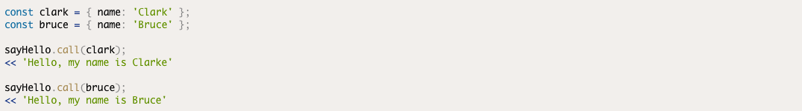
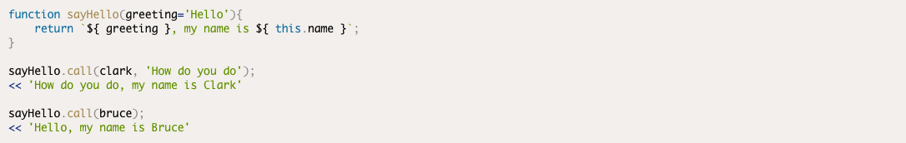
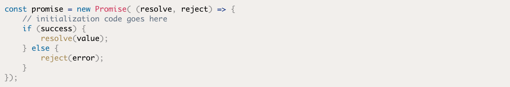
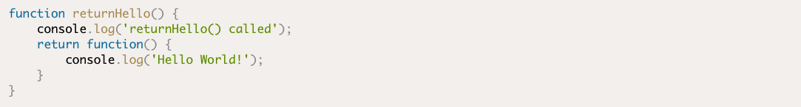
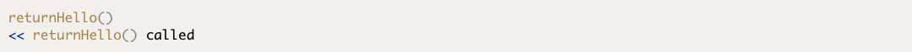
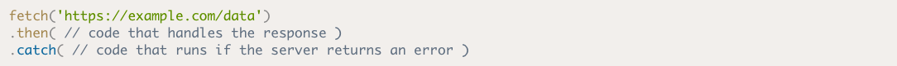
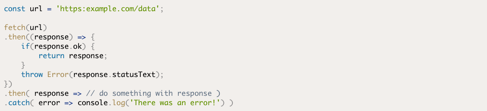
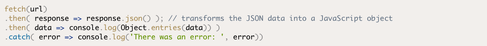
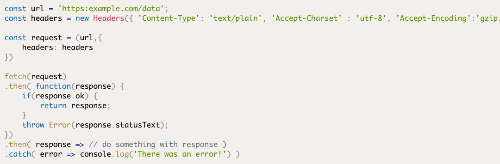

Readings
Further Functions
In JavaScript, functions arefirst-class objects, which means they can be passed around in the same way as every other value. They can have their own properties and methods, as well as accepting other functions as parameters and being returned by other functions. This makes them a very flexible tool to work with in JavaScript, and there are a variety of techniques and patterns that can be used to make code cleaner.
Function Properties and Methods
We can create some objects that have a name property, then use the call() method to invoke the sayHello() function, providing each object as an argument. This will then take the value of this in the function:
If the function that’s called requires any parameters, these need to be provided as arguments after the first argument, which is always the value of this . For example, let's update the sayHello() function to give a more generalized greeting that’s provided as an argument:
The apply() method works in the same way, except the arguments of the function are provided as an array, even if there is only one argument:
Creating A Promise
A promise is created using a constructor function. This takes a function called anexecutoras an argument. The executor initializes the promise and starts the asynchronous operation. It also accepts two functions as arguments: the resolve() function is called if the operation is successful, and the reject() function is called if the operation fails. The general layout of a promise can be seen in the code below:
Functions That Return Functions
We've just seen that functions can accept another function as an argument (a callback), but they can also return a function. The example below shows a function called returnHello() that returns a 'Hello World' function:
When the returnHello() function is invoked, it logs a message to the console then returns another function:
AJAX
Ajax is a technique that allows web pages to communicate asynchronously with a server, and it dynamically updates web pages without reloading. This enables data to be sent and received in the background, as well as portions of a page to be updated in response to user events, while the rest of the program continues to run.
Basic Usage
The Fetch API provides a global fetch() method that only has one mandatory argument, which is the URL of the resource you wish to fetch. A very basic example would look something like the following piece of code:
As you can see, the fetch() method returns a promise that resolves to the response returned from the URL that was provided as an argument. In the example above, the promise will be resolved when a response is received from the URL 'https:example.com/data'. Because it’s a promise, we can also use a catch statement at the end to deal with any errors that may occur.
Response Interface
The Fetch API introduced the Response interface that deals with the object that’s returned when the promise is fulfilled. Response objects have a number of properties and methods that allow us to process the response effectively.
JSON Responses
JSON is probably the most common format for AJAX responses. The json() method is used to deal with these by transforming a stream of JSON data into a promise that resolves to a JavaScript object. Here is an example of how a JSON response promise would be resolved:
Putting It All Together
We can use the Headers, Request and Response objects to put together a typical example that sets up the URL, Request and Headers before calling the fetch() method:
